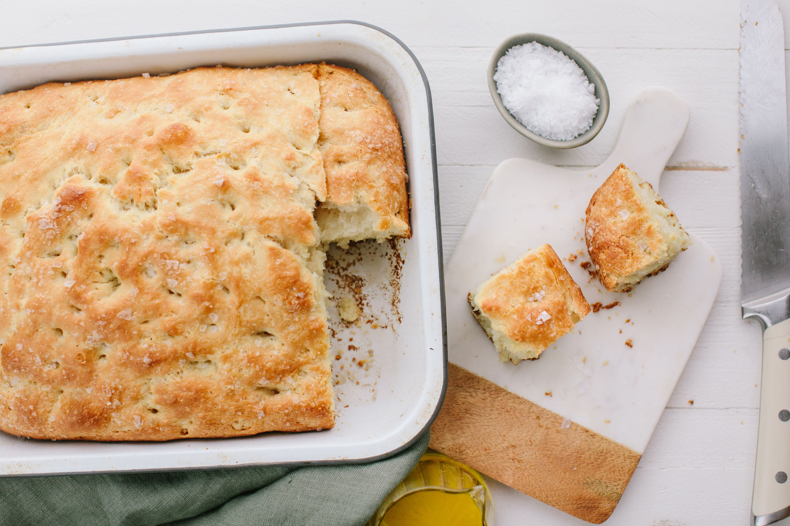

Figasa (Cecchetti Bread)

Description:
This is my family's own style of Focaccia bread. This version is a lot
shorter than traditional Focaccia, but it is just as delicious! This
goes great as an appetizer at a party or as sandwhich bread.
Ingredients:
- 1 pkg dry yead
- Salt
- Olive Oil
- 6 c. flour
Steps:
- Mix 1 pkg dry yeast in 2 c. warm water.
- Add 1/2 t. salt, 1 Tbl. Olive Oil.
- Mix 4 c. flour.
- Put 2 c. flour on chopping block and add dough. Knead dough
until it is workable (will stop sticking to hands). Place in
greased bowl (use a bit of Olive Oil), cover, let rise until
doubled (about 1-hour). *Sometimes I add dried rosemary*
- Push dough down and pat out on chopping block. Separate into
two dough balls, and flatten on greased and salted cookie
sheets. Cover and let rise again (approx 1-hr). Then, stretch
dough and make "knuckles" in dough. Brush top with olive oil
and salt. *Sometimes I add a couple cloves of fresh minced
garlic and brush on top with the oil*
- Bake at 450-475 for about 20 minutes or until golden brown
(I usually set the timer for 15 mins and starting checking).
Remove from oven, brush again with olive oil and salt. Let
cool on cooling rack and then cute into squares.
Home